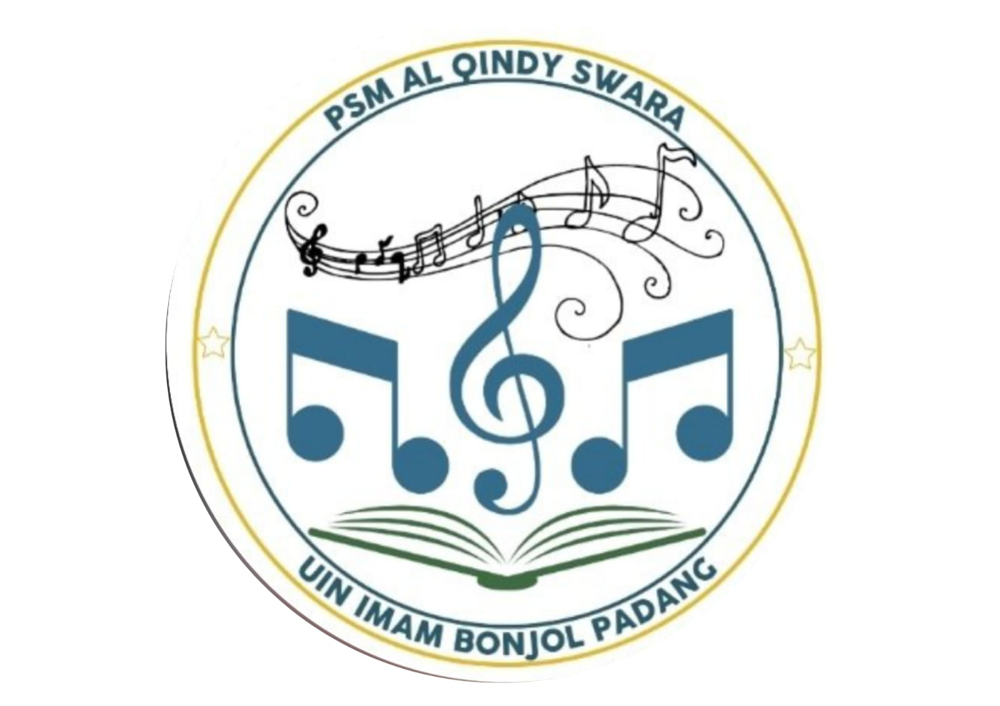
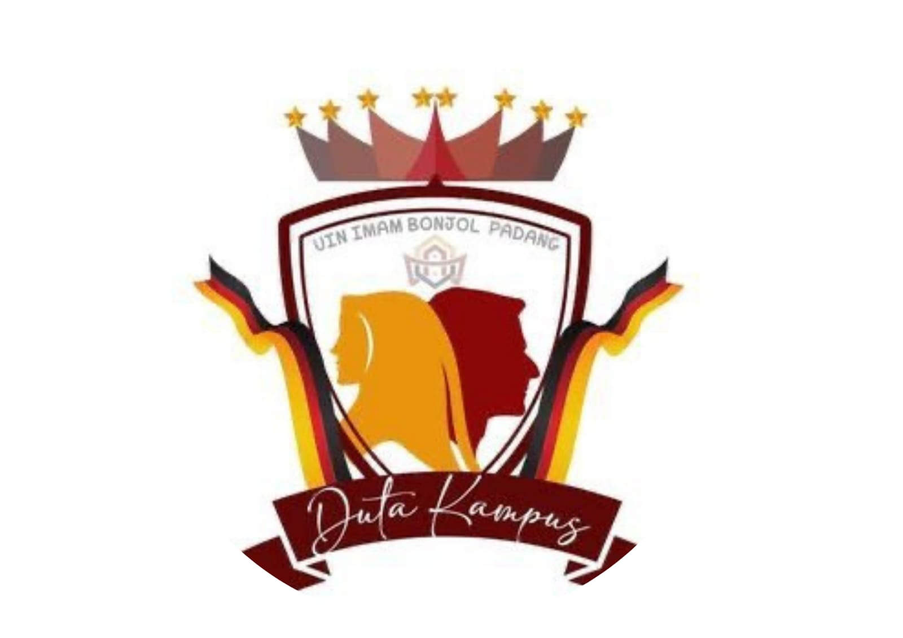
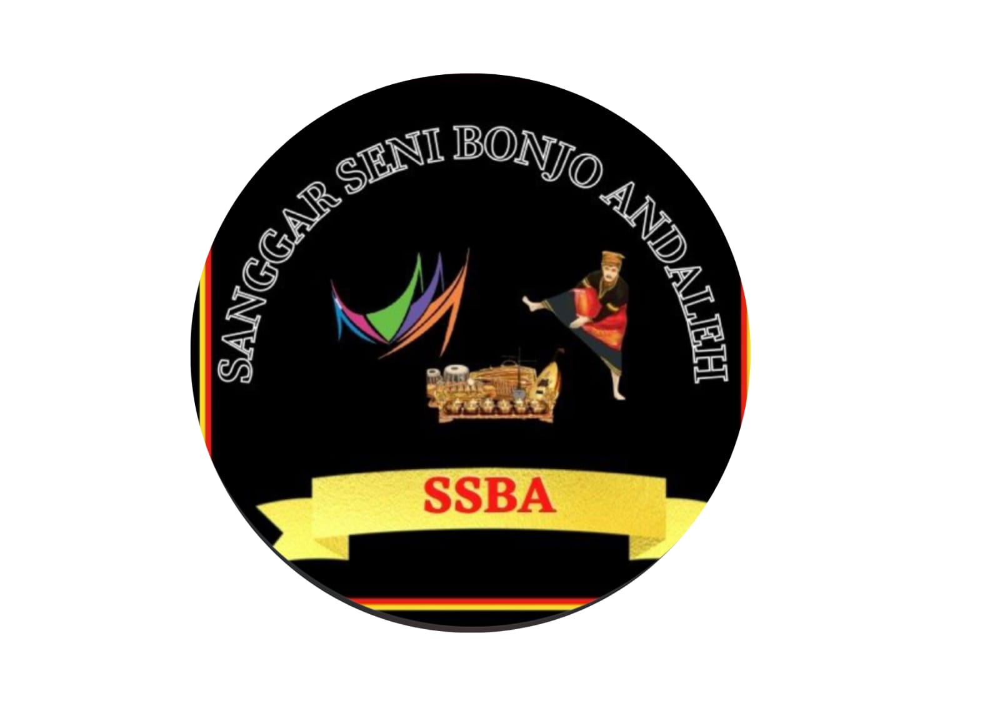

TENTANG KAMI
Unit Kegiatan Mahasiswa Protokoler Dan Pengembangan Diri
UKM PPD UIN Imam Bonjol Padang adalah organisasi kemahasiswaan yang berfokus pada pembinaan keprotokoleran, pengembangan kepemimpinan, tata krama, serta potensi minat dan bakat mahasiswa. Kami berkomitmen untuk mencetak kader mahasiswa yang profesional, berkarakter, dan berdaya saing tinggi baik di lingkungan internal maupun eksternal kampus.
BIRO UKMPPD
Unit Kegiatan Mahasiswa Protokoler Dan Pengembangan Diri
UKMPPD
Universitas Islam Negeri (UIN) Imam Bonjol Padang membentuk Unit Kegiatan Mahasiswa (UKM) Protokoler dan Pengembangan Diri (PPD) sebagai wadah aspirasi mahasiswa. Dimana Unit kegiatan mahasiswa memiliki 4 biro dan 1 bidang yaitu biro Protokoler, Biro Paduan suara, Biro Seni Budaya, Biro Ambasador dan satu bidang yaitu bidang Humas.
PPD adalah Unit Kegiatan Mahasiswa UIN Imam Bonjol Padang yang mengajarkan kita tentang keprotokoleran.
PADUAN SUARA

Biro Paduan Suara merupakan salah satu biro dibawah naungan UKM PPD yang berfokus pada pengembangan bakat olah vokal. Di biro ini, anggota dilatih untuk mengasah teknik bernyanyi, harmonisasi, serta keterpaduan nada demi menghasilkan harmoni suara yang indah dan kompak.
Di biro ini, para anggota tidak hanya diajarkan teknik dasar bernyanyi, tetapi juga dilatih secara intensif mengenai kontrol pernapasan, pembentukan artikulasi, pemahaman irama, hingga teknik harmonisasi nada multi-suara (Sopran, Alto, Tenor, Bass).
Melalui proses latihan yang konsisten, Biro Paduan Suara berkomitmen untuk menyatukan beragam karakter vokal yang berbeda menjadi satu kesatuan harmoni nada yang padu, indah, dan siap bertugas dalam berbagai agenda formal kampus maupun kompetisi.
AMBASADOR

Biro Ambassador merupakan divisi strategis di bawah naungan UKM PPD yang berperan sebagai Duta Kampus dan wajah representatif dari UIN Imam Bonjol Padang.
Biro ini berfokus pada pembentukan personal branding, etika berbusana, keterampilan tata krama (table manners & public etiquette), serta komunikasi publik yang prima.
Sebagai garda terdepan dalam menyambut tamu-tamu kehormatan, tokoh penting, dan delegasi luar, para anggota Biro Ambassador dibekali dengan kemampuan keprotokoleran tingkat tinggi untuk mencerminkan citra kampus yang anggun, profesional, dan berintegritas.
SENI BUDAYA

Biro Seni Budaya merupakan salah satu biro di bawah naungan UKM PPD yang berfokus pada pengembangan bakat seni dan budaya. Biro ini bertujuan untuk melestarikan, mengembangkan, dan mempromosikan kekayaan seni dan budaya lokal maupun nasional.
VISI MISI UKMPPD
Unit Kegiatan Mahasiswa Protokoler Dan Pengembangan Diri
VISI
Menjadikan rumah dan wadah bagi Mahasiswa UIN Imam Bonjol Padang untuk mengembangkan potensi diri baik softskill dan hardskill di bidang keprotokoleran dan pengembangan diri berbasis akhlaqul karimah dan berpegang teguh kepada adat basandi syara', syara' basandi kitabullah.
MISI
1. Menjadikan rumah bagi mahasiswa UIN Imam Bonjol Padang untuk berkreasi dan berkarya.
2. Menjalin hubungan harmonis antara elemen organisasi baik internal maupun eksternal.
3. Mendorong mahasiswa UIN Imam Bonjol Padang untuk bisa menemukan jati diri dan mengembangkan bakat minat melalui acara/event.
4. Menciptakan komunitas yang profesional dan handal di bidangnya agar terciptanya Mahasiswa UIN Imam Bonjol Padang yang berakhlaq, berbudaya, dan inovatif.
5. Menjadikan mahasiswa UIN Imam Bonjol Padang yang berkualitas dan mampu bersaing antar kampus sesuai dengan potensi dan kemampuan diri, dan menjadi garda terdepan mahasiswa UIN Imam Bonjol Padang.
PENGURUS UKMPPD
Unit Kegiatan Mahasiswa Protokoler Dan Pengembangan Diri
BADAN PENGURUS HARIAN/INTI (BPH)
KETUA UMUM

HASNAH FITRIANI
Periode 2026
WAKIL KETUA UMUM

MUHAMMAD FIKRI
Periode 2026
SEKRETARIS UMUM

TENGKU SINDI AULIA RAHMAN
Periode 2026
BENDAHARA UMUM

MIA NABILA
Periode 2026
PENGURUS PROTOKOLER
KABIRO PROTOKOLER
PUTRI KHAIRA
Periode 2026
Staf Protokoler
MUHAMMAD IQBAL RAHMAN
Periode 2026
Staf Protokoler
SAYYID MUHAMMAD ANSHOR
Periode 2026
PENGURUS PADUAN SUARA
KABIRO PADUAN SUARA
RAHMA HABIBAH ALIF.R
Periode 2026
Staf Paduan Suara
HAFIZATUL PADILA
Periode 2026
Staf Paduan Suara
NISA RAHDATUL JANNAH
Periode 2026
PENGURUS AMBASADOR
KABIRO AMBASADOR
ORIN ALMAIDA ARRAHMAH
Periode 2026
Staf Ambasador
ATIKA PUTRI KHAIRANI
Periode 2026
Staf Ambasador
VEBRI IRAWAN
Periode 2026
PENGURUS SENI BUDAYA
KABIRO SENI BUDAYA
NAILA ANI KHALDA
Periode 2026
Staf Seni Budaya
RIFKI RAMADHAN
Periode 2026
Staf Seni Budaya
RAFIQAH RIQQAH
Periode 2026
KEGIATAN KEGIATAN YANG DILAKUKAN SAAT KAMU TERPILIH JADI ANGGOTA PPD

DINAS WISUDA ANGKATAN 96

DINAS SEIBA INTERNASIONAL 2026

DINAS YUDISIUM FEBI

DINAS PENGUKUHAN ORMAWA FEBI

DINAS PENGUKUHAN ORMAWA SE UIN IB

DINAS PENGUKUHAN ORMAWA FAKULTAS SYARIAH

DINAS PENGUKUHAN ORMAWA FAKULTAS SAINTEK
Jl. Sungai Bangek Padang Sumatera Barat
(0751) 1234 5678
ukmppd@uinib.ac.id